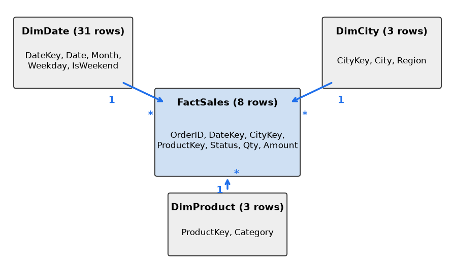
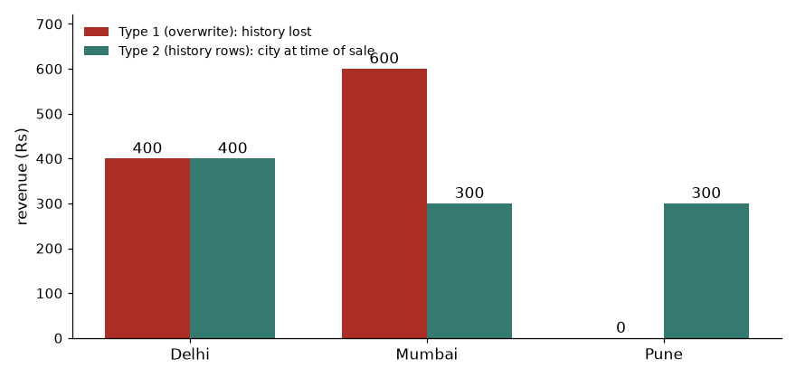

A Power BI report is only as good as what is under it. Two skills sit there. First, Power Query cleans and shapes raw files and databases into tidy tables, with a recorded recipe that re-runs on every refresh. Second, data modeling decides how those tables are split and connected, so that one click on a slicer filters the right rows. Most wrong numbers in dashboards come from a weak model, not from a weak chart. In this chapter you will clean a dirty orders file with Power Query and its language M, design a star schema for our shop, connect the tables with relationships, and build a date table. DAX (the formula language) comes in Chapter 10.
Words you need
| Word | Plain meaning |
|---|---|
| Query | One recipe that produces one table |
| Applied step | One recorded transformation inside a query |
| M | The language behind the steps (a "formula language" for data shaping) |
| Connector | A plug for a source: Excel, CSV, SQL Server, SharePoint, Web, API |
How it works. In Power BI Desktop, Home > Transform data opens the Power Query Editor. A query is a let ... in block: each line names a step, the next line uses that name, and the name after in is the result. M is case sensitive: Table.AddColumn works, table.addcolumn fails.
Connectors. Excel and CSV files, SQL Server and other databases, SharePoint folders, Web and APIs (Web.Contents fetches, Json.Document parses). The first connection asks for credentials and a privacy level; never paste real passwords into shared files.
Our dirty file. Four raw rows with typical problems: spaces and mixed case in City, dates written day-month-year, and a text n/a where a price should be.
OrderID,OrderDate,City,Category,Qty,Price,Status
1001,03-01-2025, pune ,Fashion,2,499,Delivered
1002,03-01-2025,MUMBAI,Electronics,1,1299,Delivered
1003,04-01-2025,Pune,Grocery,3,199,Returned
1004,05-01-2025,Delhi,Fashion,1,n/a,DeliveredWorked example 9.1.1 The full cleaning query in M (not run here):
let
Source = Csv.Document(File.Contents("C:\data\orders_raw.csv"),
[Delimiter=",", Columns=7, Encoding=65001, QuoteStyle=QuoteStyle.Csv]),
Promoted = Table.PromoteHeaders(Source, [PromoteAllScalars=true]),
Cleaned = Table.TransformColumns(Promoted,
{{"City", each Text.Proper(Text.Trim(_)), type text}}),
Typed = Table.TransformColumnTypes(Cleaned,
{{"OrderID", Int64.Type}, {"OrderDate", type date},
{"Qty", Int64.Type}, {"Price", type number}}, "en-GB"),
NoErrors = Table.ReplaceErrorValues(Typed, {{"Price", null}}),
WithAmt = Table.AddColumn(NoErrors, "Amount", each [Qty] * [Price], type number)
in
WithAmtPredict: what happens to the n/a price, and to the date 03-01-2025?
The same steps in pandas (str.strip().str.title(), to_datetime(format="%d-%m-%Y"), to_numeric(errors="coerce")) give the real output:
OrderID OrderDate City Category Qty Price Status Amount
0 1001 2025-01-03 Pune Fashion 2 499.0 Delivered 998.0
1 1002 2025-01-03 Mumbai Electronics 1 1299.0 Delivered 1299.0
2 1003 2025-01-04 Pune Grocery 3 199.0 Returned 597.0
3 1004 2025-01-05 Delhi Fashion 1 NaN Delivered NaNText.Trim removes spaces around pune ; Text.Proper makes MUMBAI into Mumbai. Without this, Pune and pune are two cities in a slicer."en-GB" is the culture (locale). It tells M the date is day-month-year, so 03-01-2025 is 3 January. With a US culture it would be read as 1 March, silently. pandas needs the same hint, format="%d-%m-%Y".n/a cannot become a number, so that cell becomes an Error value; the rest survives. NoErrors (Table.ReplaceErrorValues) turns it into null (the NaN above). A row-level alternative: each try Number.From([Price]) otherwise null.[Qty] * [Price] multiplies column values row by row. A null price gives a null amount (NaN in pandas): 2 × 499 = 998, 1 × 1299 = 1,299, 3 × 199 = 597.Worked example 9.1.2 The core transformations and their M functions.
| Task | M function (not run here) |
|---|---|
| Change type | Table.TransformColumnTypes(t, {{"Qty", Int64.Type}}) |
| Split / merge columns | Table.SplitColumn(t, "Code", Splitter.SplitTextByDelimiter("-"), {"Dept", "No"}), [First] & " " & [Last] |
| Conditional column | Table.AddColumn(t, "Size", each if [Amount] = null then "Unknown" else if [Amount] >= 1000 then "Large" else "Small") |
| Filter rows | Table.SelectRows(t, each [Status] = "Delivered") |
| Group by | Table.Group(t, {"City"}, {{"Orders", each Table.RowCount(_), Int64.Type}, {"Revenue", each List.Sum([Amount]), type number}}) |
| Unpivot / pivot | Table.UnpivotOtherColumns(...) / Table.Pivot(...) (Chapter 3, 3.5) |
| Error handling | try <expr> otherwise <value>, Table.ReplaceErrorValues, Table.RemoveRowsWithErrors |
= null first In M, [Amount] >= 1000 on a null does not give true or false, and if then raises an error.Connection to the real job. Every dashboard project starts here, and the recipe documents your cleaning for the next person.
Applications
Check yourself
in mean in an M query? Answer: It is the result of the query (the final step).Text.Trim before Text.Proper useful? Answer: Spaces must go first so the text is identical and cased consistently.Append (Table.Combine) stacks tables with the same columns (for example 12 monthly files). Columns match by name; a column missing in one table becomes null there.
Merge (Table.NestedJoin, then Table.ExpandTableColumn) is a join. It needs a join kind:
| Join kind (M) | Keeps |
|---|---|
Left outer (JoinKind.LeftOuter) | All rows of the first table, matches from the second |
Inner (JoinKind.Inner) | Only rows with a match in both |
| Right outer, Full outer | All of the second, or all of both |
Left anti (JoinKind.LeftAnti) | First-table rows with no match (an audit tool) |
Worked example 9.2.1 Join the 8 sales rows (total 9,340) to a Geography table Pune: West, Mumbai: West, Chennai: South. Delhi is missing from Geography; Chennai has no orders. Counts from pandas:
left 8 9340
inner 6 6042
right 7 6042.0
outer 9 9340.0
OrderID City
3 1004 Delhi
6 1007 DelhiParameters and functions. A parameter is a named value you change without editing steps (Home > Manage Parameters), e.g. File.Contents(FolderPath & "orders_raw.csv"). A custom function wraps a recipe for reuse:
let
CleanCity = (txt as text) as text => Text.Proper(Text.Trim(txt))
in
CleanCityCall it from another query: Table.TransformColumns(Promoted, {{"City", CleanCity, type text}}). The same pattern applied to every file in a folder (Get Data > Folder > Combine) merges 12 monthly files.
Query folding. With a database source, Power Query can translate your steps into one SQL query that runs on the server, so only the small answer travels. Filter, choose columns and group usually fold. Right-click a step: if "View Native Query" is enabled, it folds. Custom row functions, Table.Buffer and merging two different sources break folding, and later steps then run on your machine. Rule: filter and remove columns first. CSV files never fold.
Incremental refresh and dataflows. Incremental refresh reloads only recent partitions (say the last 7 days) and keeps older ones. Create two date/time parameters named exactly RangeStart and RangeEnd, filter your date column with them ([OrderDate] >= RangeStart and [OrderDate] < RangeEnd), then set the policy in the model; it runs after publishing and works best when the filter folds. A dataflow is Power Query in the Service: it prepares a table once and many datasets reuse it.
Worked example 9.2.2 A SQL refresh takes 40 minutes: it loads all 20 million rows, then filters to 2 years in Power Query. What changes?
WHERE OrderDate >= ..., and remove unused columns early. Check "View Native Query".Applications
City also fails to match "Pune " with "Pune", so clean keys first (trim, same case).Check yourself
RangeStart and RangeEnd.Formal definition.
| Table type | What a row is | Typical columns | Size |
|---|---|---|---|
| Fact | One event at a fixed grain (one order, one click) | Keys to dimensions, numbers to add up (Qty, Amount) | Large: millions of rows |
| Dimension | One thing (a city, a product, a day) | A unique key, plus descriptive text | Small: tens to thousands |
The grain is what one fact row means; decide it first. Ours: one row per order (the 8-row Sales table). Because the fact table is surrounded by dimensions, the diagram looks like a star.

Read it: each arrow starts at a dimension (the 1 side: each key appears once) and ends at the fact table (the \* side: a key can appear in many rows). A filter on a dimension flows down the arrow to the fact table.
Why not one flat table? It repeats text in every row (big, slow to refresh), one typo makes two categories, and DAX and relationships are fastest on the star shape. The engine compresses small integer keys far better than long repeated text.
Worked example 9.3.1 Split our flat 8-row Sales into a star. We build DimCity (3 rows: Delhi 1, Mumbai 2, Pune 3, with Region), DimProduct (Electronics 1, Fashion 2, Grocery 3) and DimDate (every day of January 2025, 31 rows). The fact table keeps keys and numbers. Real pandas output:
OrderID DateKey CityKey ProductKey Status Qty Amount
1001 20250103 3 2 Delivered 2 998
1002 20250103 2 1 Delivered 1 1299
1003 20250104 3 3 Returned 3 597
1004 20250105 1 2 Delivered 1 799
1005 20250106 2 3 Cancelled 5 450
1006 20250107 2 2 Delivered 2 1298
1007 20250109 1 1 Delivered 1 2499
1008 20250110 3 2 Delivered 4 1400CityKey (Pune becomes 3); same for product; turn the date into an integer key YYYYMMDD (20250103).Qty, Amount (numbers we sum) and the small Status column in the fact.Amount total is still 9,340, so nothing was lost or duplicated in the split.DimCity; to rename it, you change one cell.Worked example 9.3.2 Classify Qty, Category, Region, Amount, Weekday, OrderID. Ask: do I sum it, or slice by it?
Connection to the real job. In an interview, "explain star schema" is a standard question. In Power BI work it is the first review a senior makes: if your model is a star, DAX stays simple and fast. A snowflake (dimensions split further, City to State) adds joins; flatten it when you can.
Applications
Check yourself
City a fact or a dimension column? Answer: Dimension: you slice by it.DimCity to FactSales so that only West orders remain. Cardinality says how many rows match on each end. Direction says which way water flows.Formal definition. A relationship links one column in each of two tables (the key). Its properties:
| Property | Options | Default and advice |
|---|---|---|
| Cardinality | One-to-many (1:\), many-to-one, one-to-one, many-to-many (\:\*) | Use 1:\* from dimension to fact almost always |
| Cross-filter direction | Single (dimension filters fact), Both | Single; Both only with a clear reason |
| Active | One active relationship per pair of tables; others are dashed and inactive | Role-playing dimensions use inactive ones |
The key on the 1 side must be unique. Create relationships in Model view by dragging a key, or Home > Manage relationships.
Worked example 9.4.1 Filter flows from dimension to fact. Select Region = West. West contains Mumbai (key 2) and Pune (key 3). Which fact rows remain, and what is their total?
CityKey 2 and 3, so the fact rows are orders 1001, 1002, 1003, 1005, 1006, 1008 (6 rows).Worked example 9.4.2 What if the "1" side is not unique? Someone appends Pune twice to DimCity (11 rows after joining, instead of 8).
Cross-filter direction. With single direction, a filter on DimCity reaches FactSales but not the other way. Both lets filters travel upstream too, which can create ambiguous paths, slow DAX and surprising totals. Use CROSSFILTER inside one measure when you need it once (Chapter 10).
Many-to-many. If a key repeats on both sides (students and courses), use a bridge table with one row per valid pair, linked 1:\* to both; native \:\ makes totals hard to reason about.
Role-playing dimensions. One dimension used for different purposes. An orders table has OrderDate and ShipDate. Both point to the same DimDate. Only one relationship can be active (usually order date); the ship date relationship stays inactive, and a measure activates it with USERELATIONSHIP (Chapter 10).
Connection to the real job. Most "my total is wrong" tickets are a duplicate key, an accidental many-to-many, a missing relationship (the slicer does nothing) or a Both filter. Learn to read the 1 and \* symbols in Model view.
Applications
Check yourself
Date table. One row per day from the first to the last date you need (at least whole years), with a unique Date column of type date and no gaps. Build it in DAX: DimDate = CALENDAR(DATE(2024,1,1), DATE(2025,12,31)) (or CALENDARAUTO()), then add columns:
DimDate =
ADDCOLUMNS(
CALENDAR(DATE(2025,1,1), DATE(2025,1,31)),
"Month", FORMAT([Date], "MMM"),
"Weekday", FORMAT([Date], "dddd"),
"IsWeekend", WEEKDAY([Date], 2) > 5)Not run here. Then Mark as date table (Table tools) using the Date column, and relate DimDate[Date] to the fact date column (1:\*). Sort Month by MonthNo (Column tools > Sort by column), or the months appear alphabetically. Worked example 9.5.1 How many rows should a calendar for 2024 and 2025 have, and how many weekend days are in January 2025?
Wednesday). Saturdays fall on 4, 11, 18, 25, Sundays on 5, 12, 19, 26.IsWeekend.sum()) also gives 8.Hierarchies. An ordered drill path such as Year > Quarter > Month > Day: drag one field onto another in the Fields pane, then drill with the chart arrows.
Calculated column vs measure. This is the most important modeling distinction.
| Calculated column | Measure | |
|---|---|---|
| When it computes | At refresh, for each row | At query time, for the current filter |
| Stored in the file | Yes (takes memory) | No (only the formula) |
| Used for | Slicers, row-level labels, grouping | Totals, ratios, KPIs |
| Reacts to slicers | No | Yes |
| Example | Size = IF(FactSales[Amount] >= 1000, "Large", "Small") | Total Sales = SUM(FactSales[Amount]) |
Worked example 9.5.2 Where do these belong? (a) "Revenue" shown in cards, (b) "Large order" label per order, (c) "Average order value".
Revenue = SUM(FactSales[Amount]).AOV = DIVIDE([Revenue], DISTINCTCOUNT(FactSales[OrderID])) gives 9,340 / 8 = 1,167.5.Performance impact. Calculated columns add memory and refresh time. Prefer Power Query columns for row-level logic and measures for aggregates; remove unused columns, use integer keys, avoid high-cardinality columns like timestamps with seconds. Performance Analyzer (View > Performance analyzer) times each visual; Chapter 10 mentions DAX Studio.
Aggregations (awareness). For billion-row facts, a small aggregation table answers most visuals. You do not need this yet.
Connection to the real job. The date table, one-to-many keys, measures instead of columns: these three habits solve most modeling issues in the PL-300 exam and in real projects.
Applications
DimDate.DimDate.Check yourself
The grain of a fact table is a sentence that finishes "one row is one ...". Examples: one row per order line; one row per customer per day; one row per month per product. Write it down before building the table. Everything else follows: the dimensions that can attach (a fact at order-line grain can have a product, a fact at day grain cannot), the measures that can be added up, and the checks you can run.
SELECT order_id, line_no, COUNT(*) FROM fact GROUP BY 1, 2 HAVING COUNT(*) > 1 returns nothing.Problem 9.6.1 A table has one row per order line with columns order_id, line_no, product, qty, amount and also order_shipping (the shipping fee for the whole order). An order has 3 lines and shipping of Rs 60. What does SUM(order_shipping) report for this order, and how do you fix the model?
| Grain | One row per order line. |
|---|---|
| Problem | The fee belongs to the order, but it sits on 3 rows, so SUM gives 3 × 60 = 180. |
| Fix 1 | Move shipping to an orders table at order grain (one row, 60), and relate it to the lines through order_id. |
| Fix 2 | If it must stay on the lines, split it: put 60 on the first line and 0 on the others, or allocate 20 per line (and document the rule). |
| Check | SUM of the allocated column must equal the real total, 60. Always reconcile after a fix. |
Dimension attributes change: a customer moves from Pune to Mumbai, a product changes category, an employee changes team. If you simply overwrite the old value (Type 1), every past order is now shown under the new value and last year's report changes. If you keep a new row for each version (Type 2), each sale is attached to the value that was true on the sale date. Type 2 adds columns valid_from, valid_to and is_current, and a surrogate key (cust_key, a new id for each version).
Setup: Asha lived in Pune until 1 March 2025 and then moved to Mumbai; Ravi is always in Delhi. Five orders in total, Rs 1,000. We compute revenue by city both ways.
import sqlite3, pandas as pd
con = sqlite3.connect(":memory:")
con.executescript("""
CREATE TABLE sales(order_id INT, cust_id INT, order_date TEXT, amount REAL);
INSERT INTO sales VALUES (1,1,'2025-01-10',100),(2,1,'2025-02-15',200),(3,1,'2025-04-05',300),
(4,2,'2025-02-20',150),(5,2,'2025-05-01',250);
CREATE TABLE dim1(cust_id INT, name TEXT, city TEXT);
INSERT INTO dim1 VALUES (1,'Asha','Mumbai'),(2,'Ravi','Delhi');
CREATE TABLE dim2(cust_key INT, cust_id INT, name TEXT, city TEXT, valid_from TEXT, valid_to TEXT, is_current INT);
INSERT INTO dim2 VALUES (1,1,'Asha','Pune','2024-01-01','2025-03-01',0),
(2,1,'Asha','Mumbai','2025-03-01','9999-12-31',1),
(3,2,'Ravi','Delhi','2024-01-01','9999-12-31',1);
""")
def q(sql):
print(pd.read_sql(sql, con).to_string(index=False)); print()
print("Type 1 (overwrite):")
q("""SELECT d.city, SUM(s.amount) AS revenue FROM sales s JOIN dim1 d USING(cust_id)
GROUP BY d.city ORDER BY d.city""")
print("Type 2 (history rows, join on the date range):")
q("""SELECT d.city, SUM(s.amount) AS revenue FROM sales s
JOIN dim2 d ON d.cust_id = s.cust_id AND s.order_date >= d.valid_from AND s.order_date < d.valid_to
GROUP BY d.city ORDER BY d.city""")
print("Forgot the date condition:")
q("SELECT COUNT(*) AS rows, SUM(amount) AS revenue FROM sales s JOIN dim2 d ON d.cust_id = s.cust_id")Type 1 (overwrite):
city revenue
Delhi 400.0
Mumbai 600.0
Type 2 (history rows, join on the date range):
city revenue
Delhi 400.0
Mumbai 300.0
Pune 300.0
Forgot the date condition:
rows revenue
8 1600.0
How to read it: Under Type 1 (red) Asha's three orders (Rs 600) all appear under Mumbai and Pune shows nothing, as if she never lived there. Under Type 2 (green) her first two orders (Rs 300) stay in Pune, where she lived, and the third (Rs 300) goes to Mumbai. Both add up to 1,000, but only Type 2 answers "what did Pune sell in January and February?" correctly.
Problem 9.6.2 Using the Type 2 table, which dim2 row does order 3 (5 April 2025, customer 1) join to, and why does the last query return 8 rows and 1,600?
| Order 3 | Date 2025-04-05. Row 2 has valid_from 2025-03-01 and valid_to 9999-12-31, so 2025-04-05 falls inside. City = Mumbai. |
|---|---|
| Row 1 | valid_to is 2025-03-01, and the test is date < valid_to, so 2025-04-05 does not fall inside. Using a half-open range (from inclusive, to exclusive) prevents a date on the boundary from matching two rows. |
| Without date | Customer 1 has 3 orders and 2 dimension rows: 3 × 2 = 6 rows. Customer 2 has 2 orders and 1 row: 2 rows. Total 8 rows. |
| Revenue | Customer 1: (100 + 200 + 300) × 2 = 1,200. Customer 2: 150 + 250 = 400. Total 1,600 instead of 1,000. The extra 600 is the fan-out. |
| Rule | Any join to a Type 2 dimension must include the validity range, or use the surrogate key stored in the fact table at load time. |
Which type should you use? Type 1 for corrections (a misspelt name), Type 2 for attributes that must report history (city, segment, sales rep), and sometimes Type 3 (a second column holding the previous value) when you only need "current and previous". In Power Query or a warehouse, Type 2 is built by comparing the incoming row with the current row and, when an attribute changed, closing the old row (set valid_to and is_current = 0) and inserting a new one. Tools such as dbt call this a snapshot.
A snowflake schema normalises a dimension into several linked tables (product to subcategory to category). It saves a little storage and keeps one place to edit a category name, but it adds relationships to maintain and slows slicing. In Power BI the usual advice is to flatten the snowflake into one dimension in Power Query, so the model stays a star with single-hop filters.
| Question | Star (flattened) | Snowflake |
|---|---|---|
| Number of relationships | Few | More |
| Simplicity for report authors | High (one table per concept) | Lower |
| Storage | Slightly more (repeated text) | Slightly less |
| Compression in Power BI (VertiPaq) | Repeated text compresses well, so the cost is small | Little gain |
| Where to edit a category name | In the dimension build | One place |
| Typical choice for a Power BI model | Yes | Only when the source forces it |
A many-to-many relationship appears when one order can carry several tags, or one customer belongs to several segments. Never join the two tables and sum the amount: the amount repeats once per tag. The standard fix is a bridge table with one row per (order, tag) pair, relationships from the order and the tag dimension to the bridge, and a decision about how to count.
import sqlite3, pandas as pd
con = sqlite3.connect(":memory:")
con.executescript("""
CREATE TABLE orders(order_id INT, amount REAL);
INSERT INTO orders VALUES (1,100),(2,200),(3,300);
CREATE TABLE tags(order_id INT, tag TEXT);
INSERT INTO tags VALUES (1,'gift'),(1,'sale'),(2,'sale'),(3,'gift'),(3,'sale'),(3,'new');
""")
def q(sql):
print(pd.read_sql(sql, con).to_string(index=False)); print()
q("SELECT SUM(amount) AS true_total FROM orders")
q("SELECT t.tag, SUM(o.amount) AS revenue FROM orders o JOIN tags t USING(order_id) GROUP BY t.tag ORDER BY t.tag")
q("SELECT SUM(o.amount) AS sum_of_tag_totals FROM orders o JOIN tags t USING(order_id)")
q("""SELECT t.tag, ROUND(SUM(o.amount * 1.0 / n.k), 1) AS weighted_revenue
FROM orders o JOIN tags t USING(order_id)
JOIN (SELECT order_id, COUNT(*) AS k FROM tags GROUP BY order_id) n USING(order_id)
GROUP BY t.tag ORDER BY t.tag""") true_total
600.0
tag revenue
gift 400.0
new 300.0
sale 600.0
sum_of_tag_totals
1300.0
tag weighted_revenue
gift 150.0
new 100.0
sale 350.0The true total is 600. By tag: gift 400, new 300, sale 600; their sum is 1,300, more than twice the real revenue, because order 3 sits in three tags. Both numbers are right in their own way. "Revenue of orders that carry the tag sale" is 600 and is fine on a single-tag slicer. A column of tag totals must never be added up. If you need a column that does add up to 600, the weighted version splits each order's amount equally over its tags (order 3 gives 100 to each tag): gift 150, new 100, sale 350, total 600. Which one is right is a business decision, so write it into the measure's description.
Problem 9.6.3 In Power BI you have Orders (one row per order) and a bridge OrderTag (order_id, tag). A card shows SUM(Orders[amount]) = 600, and a table by tag shows 400, 300, 600 with a Total row of 600. Is something broken?
| Row totals | The tag rows add up to 1,300 but the Total shows 600. |
|---|---|
| Why | The Total row is evaluated without a tag filter, so each order counts once. The rows are evaluated with a tag filter, and an order with several tags appears in each. |
| Is it a bug? | No. It is the correct behaviour of a many-to-many relationship. It is a presentation trap. |
| Fix | Either explain it in the visual's title ("orders can carry several tags; rows do not add up"), or use a weighted measure so that rows add to the total, or hide the Total row. |
Teams that survive for years keep three layers. Raw (also called bronze): the data exactly as received, never edited. Staging (silver): one table per source, with types fixed, names standardised, duplicates removed and obvious errors flagged. Marts (gold): the star schemas that reports read. The names come from tools such as dbt and from the Fabric medallion design, but the idea is older and tool-independent: when something is wrong, you can find the layer where it broke.
Each layer gets tests. The four standard ones are unique (a key has no repeats), not null, relationships (every foreign key finds its parent) and accepted values (a status is in the allowed list). Each test is a query that must return zero rows or a zero count. We write them against a small staging table that has been seeded with one problem of each kind.
import sqlite3, pandas as pd
con = sqlite3.connect(":memory:")
con.executescript("""
CREATE TABLE sales(order_id INT, cust_id INT, order_date TEXT, amount REAL);
INSERT INTO sales VALUES (1,1,'2025-01-10',100),(2,1,'2025-02-15',200),(3,1,'2025-04-05',300),
(4,2,'2025-02-20',150),(5,2,'2025-05-01',250);
CREATE TABLE dim1(cust_id INT, name TEXT, city TEXT);
INSERT INTO dim1 VALUES (1,'Asha','Mumbai'),(2,'Ravi','Delhi');
CREATE TABLE dim2(cust_key INT, cust_id INT, name TEXT, city TEXT, valid_from TEXT, valid_to TEXT, is_current INT);
INSERT INTO dim2 VALUES (1,1,'Asha','Pune','2024-01-01','2025-03-01',0),
(2,1,'Asha','Mumbai','2025-03-01','9999-12-31',1),
(3,2,'Ravi','Delhi','2024-01-01','9999-12-31',1);
""")
def q(sql):
print(pd.read_sql(sql, con).to_string(index=False)); print()
con.executescript("""
CREATE TABLE stg_orders(order_id INT, cust_id INT, status TEXT, amount REAL);
INSERT INTO stg_orders VALUES (1,1,'delivered',100),(2,2,'returned',50),(2,2,'returned',50),
(3,9,'shipped',70),(4,1,NULL,20),(5,1,'delivered',-5);
""")
tests = {
"unique order_id": "SELECT COUNT(*) FROM (SELECT order_id FROM stg_orders GROUP BY order_id HAVING COUNT(*) > 1)",
"not_null status": "SELECT COUNT(*) FROM stg_orders WHERE status IS NULL",
"relationships cust_id": "SELECT COUNT(*) FROM stg_orders o LEFT JOIN dim1 d USING(cust_id) WHERE d.cust_id IS NULL",
"accepted_values status": "SELECT COUNT(*) FROM stg_orders WHERE status IS NOT NULL AND status NOT IN ('delivered','returned','cancelled')",
"amount is not negative": "SELECT COUNT(*) FROM stg_orders WHERE amount < 0",
}
for name, sql in tests.items():
failures = con.execute(sql).fetchone()[0]
print(("FAIL " if failures else "ok ") + name + ": " + str(failures))FAIL unique order_id: 1
FAIL not_null status: 1
FAIL relationships cust_id: 1
FAIL accepted_values status: 1
FAIL amount is not negative: 1All five tests report one failing row: order 2 appears twice; order 4 has no status; order 3 belongs to customer 9, who is not in the customer table (an orphan); order 3's status shipped is not on the list (add it to the list if it is valid, or fix the source); order 5 has a negative amount. In dbt these are four lines of YAML; in Power Query you can build the same checks as small queries that count rows and stop the refresh when the count is above zero. Run them every load, and fail loudly.
| Mode | Where the data lives when you open the report | Speed | Freshness | Watch out for |
|---|---|---|---|---|
| Import | Copy inside the Power BI model (compressed in memory) | Fastest | As fresh as the last refresh | Model size limits, refresh time |
| DirectQuery | Stays in the source; each visual sends a query | Depends on the source | Live | Slow visuals, source load, limited DAX and Power Query steps |
| Composite | Some tables Import, some DirectQuery | Mixed | Mixed | Relationships across modes are limited (weak relationships) |
| Dual | One table can act as Import or DirectQuery depending on the query | Good for dimensions | Follows the query | Needs thought about the join path |
| Direct Lake (Microsoft Fabric) | Delta tables in OneLake are read straight into memory when needed, no scheduled copy | Close to Import | Close to live (after the files change, a refresh of the model metadata) | Needs Fabric capacity; may fall back to DirectQuery in some cases (check the service documentation for your setup) |
The rule of thumb: start with Import. Move to DirectQuery only if the data must be live or is too large to import, and then add aggregation tables so common visuals stay fast. Direct Lake is the Fabric option for large data already kept as Delta tables in a lakehouse. Steps below are described for the Power BI Desktop and service interfaces and are not run here (they need a Power BI environment).
Problem 9.6.4 The Sales table has 40 million rows and 5 years of history. Full refresh takes 70 minutes and mostly reloads old rows that never change. Set up incremental refresh. (Click path, not run here.)
| Step 1 | Power Query: create two parameters named exactly RangeStart and RangeEnd, type Date/Time, with any default values. |
|---|---|
| Step 2 | Filter the Sales date column: keep rows where date >= RangeStart and date < RangeEnd (one side only inclusive, so no row loads twice). |
| Step 3 | Close and apply. In the Model view, right-click the Sales table, choose Incremental refresh. |
| Step 4 | Set: store rows in the last 5 years; refresh rows in the last 7 days (or 1 month if late corrections happen). Optionally tick "detect data changes" using a last-modified column. |
| Step 5 | Publish. The service creates date partitions: old ones are kept without reload, the recent ones are refreshed. |
| Result | Each refresh reloads about one week of data, a small fraction of 40 million rows, so the time falls from 70 minutes to a few minutes. The first refresh after publishing still loads everything. |
let ... in); refresh replays them, the source is untouched.RangeStart and RangeEnd; dataflows share cleaned tables across reports.DimDate, mark it as a date table, and prefer measures over calculated columns for aggregates.| Item | Pattern |
|---|---|
| Clean text | Table.TransformColumns(t, {{"City", each Text.Proper(Text.Trim(_)), type text}}) |
| Set types | Table.TransformColumnTypes(t, {{"Qty", Int64.Type}}, "en-GB") |
| Handle errors | try ... otherwise null, Table.ReplaceErrorValues |
| Join | Table.NestedJoin(a, {"k"}, b, {"k"}, "B", JoinKind.LeftOuter) |
| Stack | Table.Combine({a, b}) |
| Calendar | CALENDAR(start, end), then Mark as date table |
| Model rule | Dimension (1) filters Fact (\*), single direction |
Problem 9.1 Is table.addcolumn valid M?
Answer: No. M is case sensitive: it must be Table.AddColumn.
Problem 9.2 Orders: Amount 100, 200, 300. After a left outer merge to a lookup, the total is 600. After an inner merge it is 300. How much revenue was unmatched, and what share?
Answer: 600 − 300 = 300 unmatched; share 300 / 600 = 50%.
Problem 9.3 What does Table.Combine({a, b}) do with a column that exists only in b?
Answer: The result has that column, with null for the rows that came from a.
Problem 9.4 Find the bug: a date 13-02-2025 loads as an error or blank in your query, while 03-01-2025 loads fine.
Answer: The culture is US (month-day-year): month 13 does not exist. Set the type with culture en-GB, or split and rebuild the date. The 03-01-2025 row was silently wrong (March 1 instead of 3 January).
Problem 9.5 Product P1 appears twice in DimProduct; the fact has one P1 row with Amount 500. What does a join give, and what does Power BI do?
Answer: The join returns that row twice, 1,000 in total. Power BI refuses a 1:\* relationship until the duplicate key is fixed.
Problem 9.6 A fact has 3 rows: DateKey 20250103 (Amount 998), 20250103 (1,299), 20250104 (597). A slicer selects 4 Jan 2025. What does the total show?
Answer: 597: only the rows whose key matches the selected date remain.
Problem 9.7 Scenario: a slicer on Region does nothing to a card showing Total Sales. List three things to check.
Answer: (1) Is there a relationship between DimCity and FactSales, and is it active? (2) Does the key have the same data type on both sides, with the dimension key unique? (3) Is the slicer built from the dimension column and the card a measure on the fact table (not a disconnected table)?
Problem 9.8 (Interview) Explain star schema versus one flat table and why Power BI prefers the star.
Answer: A star keeps events and numbers in a fact table and descriptions in small dimension tables joined by integer keys. It avoids repeated text (smaller, faster, compressed), prevents spelling splits, gives one place to maintain each attribute, and matches how DAX filter context flows (dimension to fact).
Problem 9.9 (Interview) What is query folding, and how do you check it?
Answer: Power Query turns your steps into one source query (like SQL) that runs on the server. Check with "View Native Query" on a step; keep filters and column removal first so folding is not broken.
Problem 9.10 State the grain of: (a) a table with one row per web click, (b) a table with 12 rows per product per year, one per month. Which can hold a customer dimension?
Answer: (a) one row per click (per user and timestamp); it can hold customer, page and date. (b) one row per product per month; it cannot hold customer or day, because those are finer than the grain. Adding them would force repeated rows.
Problem 9.11 A customer changes segment from Silver to Gold on 1 July. Orders in May and August are both Rs 500. Revenue by segment under Type 1 and under Type 2?
Answer: Type 1: the row is overwritten, so both orders are Gold: Gold 1,000, Silver 0. Type 2: May order Silver 500, August order Gold 500. Use Type 2 when you must report what was true at the time.
Problem 9.12 A fact table has 1,000,000 rows. After joining a dimension, the result has 1,300,000 rows. What are the likely causes?
Answer: The dimension key is not unique (duplicate rows or Type 2 history without a date condition), so some fact rows match more than one dimension row. Test uniqueness of the dimension key, and add the validity range or use the surrogate key.
Problem 9.13 An order can have up to 4 tags. A manager wants "revenue by tag" that adds up to total revenue. What do you build?
Answer: A bridge table (order, tag) and a weighted measure: each order's amount divided by its number of tags, allocated to each tag. Rows then add up to the total. Document the allocation rule, since a different rule changes the numbers.
Problem 9.14 Write the SQL for an unique test on a customer table and a relationships test between orders and customers.
Answer: SELECT cust_id FROM customers GROUP BY cust_id HAVING COUNT(*) > 1 must return no rows. SELECT o.* FROM orders o LEFT JOIN customers c ON c.cust_id = o.cust_id WHERE c.cust_id IS NULL must return no rows.
Problem 9.15 Interview: "Import or DirectQuery for a 2 TB warehouse table?"
Answer: Do not import the raw table. Options: import an aggregated table for common questions and keep the detail in DirectQuery (composite model); or, on Fabric, use Direct Lake over Delta tables. Weigh data freshness, query speed and source load, and test with real visuals.
You are my patient, practical professor. I am a working professional moving into data roles, and English is my second language. Teach me Power Query and the M language in Power BI: queries as let/in steps, changing types with culture, trimming text, handling errors, merge versus append and the join kinds. Use a small dirty orders CSV as the running example. Explain each step in simple words, show what each M line does to the table, then ask me 4 questions one at a time and wait for my answers.
You are my patient, practical professor. I am a working professional moving into data roles. Explain star schema for Power BI: fact versus dimension tables, grain, keys, and why a flat table is worse. Take a flat orders table with columns OrderID, Date, City, Category, Qty, Price and design the star step by step, listing every table and its columns. Then give me 6 exercises where I classify columns or design a model for a new business (a hospital, a call centre), without solutions, and mark my answers afterwards.
You are my patient, practical professor. I am a working professional moving into data roles. Teach Power BI relationships: cardinality (1:*, many-to-many), cross-filter direction, active versus inactive relationships and role-playing date dimensions (OrderDate and ShipDate). Use tiny tables with numbers I can check by hand, show how a filter on a dimension travels to the fact table, and show what goes wrong with a duplicate key. End with a debugging scenario: "my slicer does nothing". Quiz me one question at a time.
You are my patient, practical professor. I am a working professional moving into data roles. Review my Power BI data model design and my Power Query steps for a junior analyst portfolio project. Check: grain of the fact table, star shape, unique keys on the one side, relationship directions, date table (no gaps, marked), calculated columns versus measures, query folding and error handling. Give a numbered list of problems and fixes by priority. My model (tables, columns, relationships): [PASTE HERE]. My M code or steps: [PASTE HERE].
You are my patient, practical professor. I am a working professional moving into data roles. Run a mock interview for a Power BI analyst role on Power Query and data modeling. Ask one question at a time: star schema, query folding, incremental refresh, dataflows, many-to-many, bidirectional filters, calculated column versus measure, date tables. After each answer, score it out of 5, show a model answer in simple English, and then ask the next question. Do 8 questions.